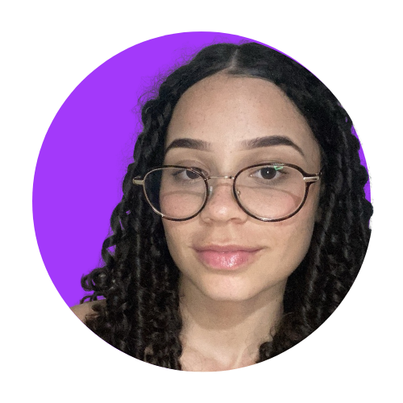

Criando experiências visuais com base sólida em FullStack, apaixonada em FrontEnd.

Olá, meu nome é Vitória e sou apaixonada por tecnologia e criatividade. Sempre fui curiosa sobre como as coisas funcionam, e isso me levou ao mundo do desenvolvimento web. Comecei criando páginas simples em HTML & CSS, e aos poucos fui mergulhando em novas tecnologias que ampliaram minhas possibilidades. Hoje, trabalho como desenvolvedora fullstack, meu foco está em desenvolver aplicações e interfaces web, com atenção especial ao frontend, acessibilidade e experiência do usuário, sempre buscando transformar ideias em projetos que realmente fazem a diferença.
Assistir Filmes
Escutar Músicas
Ir para Academia
Me tornar uma desenvolvedora referência em FrontEnd, criando interfaces modernas, acessíveis e impactantes.
Aprofundar meus conhecimentos em novas tecnologias, frameworks e evoluir constantemente como profissional.
Trabalhar em projetos grandes, colaborar com equipes incríveis e alcançar oportunidades internacionais.